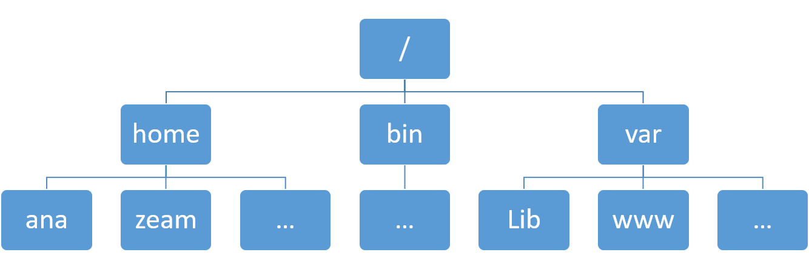

Navigating in Linux file system
You are in your home directory after you log into the system and are directed to the shell command prompt. This section will show you hot to explore Linux file system using shell commands.
Path
To understand Linux file system, you can image it as a tree structure.

In Linux, a path is a unique location of a file or a directory in the file system.
For convenience, Linux file system is usually thought of in a tree structure. On a standard Linux system you will find the layout generally follows the scheme presented below.
The tree of the file system starts at the trunk or slash, indicated by a forward slash (/). This directory, containing all underlying directories and files, is also called the root directory or “the root” of the file system.
%%bash
cd ~
pwd
/home/rstudio